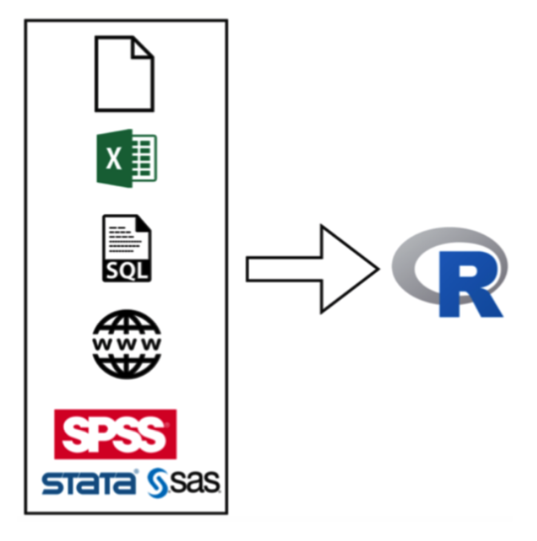
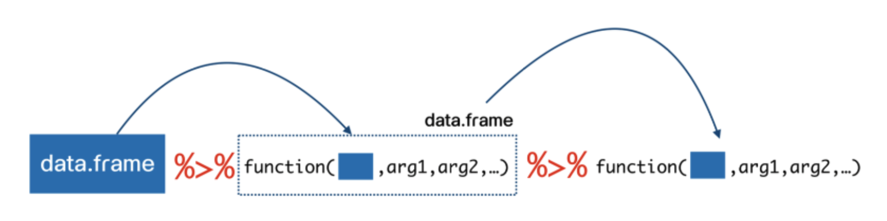
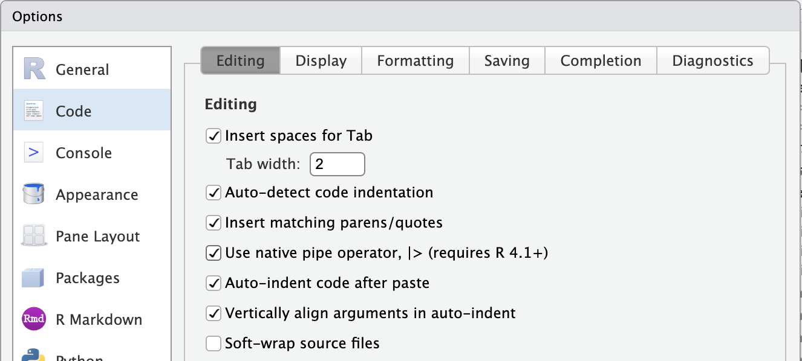
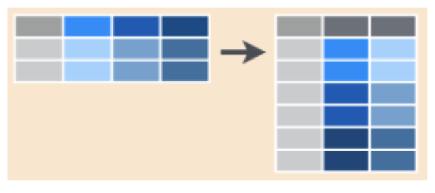

Week3 : Data Import & Tidying
Department of Educational Research and Psychology
Faculty of Education Chulalongkorn University
2025-07-27
ประเภทไฟล์ข้อมูล
R สามารถดำเนินการร่วมกับไฟล์ข้อมูลที่หลากหลายประเภท
Flat files
MS Excel
Statistical Softwares
Databases
Internet
Documents
…
หัวข้อนี้จะกล่าวถึงการนำเข้าไฟล์ประเภท rectangular data โดยจะใช้ library ได้แก่ readr, readxl, และ haven

Flat Files
เป็น rectangular data ประเภทหนึ่ง แต่ไม่ได้มีโครงสร้างตารางแบบ spreadsheet ทั่วไป
โดยปกติจะใช้ตัวคั่นระหว่างข้อมูล เช่น comma, tab, space, หรือ semicolon
read_csv()
การนําข้อมูล .csv เข้าสู่โปรแกรมสามารถใช้ฟังก์ชัน read_csv() โดยมีรูปแบบของคําสั่งดังนี้
ประเภทข้อมูลใน R ทั่วไป
numeric
character
factor
logical/boolean
read_csv()
นอกจากนำเข้าไฟล์ข้อมูล ฟังก์ชัน read_csv() จะแสดงผลลัพธ์เป็น message ที่แสดงข้อมูลเบื้องต้นของไฟล์ที่นำเข้า
จำนวน row, columns
ชื่อและประเภทของข้อมูลในแต่ละคอลัมน์ (column specifications)
library-
readrจะเดาประเภทของข้อมูลในแต่ละคอลัมน์โดยพิจารณาข้อมูล 1000 แถวแรก
Rows: 6 Columns: 5
── Column specification ────────────────────────────────────────────────────────
Delimiter: ","
chr (4): Full Name, favourite.food, mealPlan, AGE
dbl (1): Student ID
ℹ Use `spec()` to retrieve the full column specification for this data.
ℹ Specify the column types or set `show_col_types = FALSE` to quiet this message.การสำรวจข้อมูลเบื้องต้น
เมื่อนำเข้าไฟล์ข้อมูล ผู้วิเคราะห์สามารถสำรวจข้อมูลเบื้องต้นได้หลายวิธีการ
names()dplyr::glimpse()หรือstr()head(),tail()summary()หรือskimr::skim()table()หรือdplyr::count()
กิจกรรม : นำเข้า CSV file
เงินเดือนของอาจารย์สาขาวิชา A แตกต่างจากสาขาวิชา B อย่างไร?
สร้าง R project สำหรับ Week3
ดาวน์โหลด TeacherSalaryData.csv
นำเข้าไฟล์ข้อมูล TeacherSalaryData.csv โดยพิมพ์คำสั่งต่อไปนี้
ตอบคำถามต่อไปนี้
- ชุดข้อมูลนี้มีหน่วยข้อมูลกี่หน่วย
- มีตัวแปรกี่ตัว อะไรบ้าง
- ข้อมูลของตัวแปรแต่ละตัวถูกกำหนดให้เป็นประเภทใดบ้าง
- ผู้วิเคราะห์ควรจัดระเบียบข้อมูลอย่างไรเพื่อให้เหมาะสำหรับการดำเนินการต่อไป
การจัดระเบียบข้อมูล (data tidying)
โดยปกติเมื่อนำเข้าข้อมูลดิบใน R สิ่งที่ผู้วิเคราะห์ควรดำเนินการเป็นอันดับแรกคือการจัดระเบียบข้อมูลให้มีโครงสร้างและรูปแบบที่เหมาะสำหรับการดำเนินการวิเคราะห์
Checklist สำหรับการตรวจสอบและจัดระเบียบข้อมูล
ชื่อของตัวแปรในแต่ละคอลัมน์อยู่ในรูปแบบที่เหมาะสมหรือไม่ (เช่น snake_case)
ประเภทของตัวแปรถูกกำหนดอย่างถูกต้องหรือไม่
ข้อมูลถูกจัดเก็บอยู่ในโครงสร้างแบบ tidy data แล้วหรือไม่
มี missing value ในชุดข้อมูลหรือไม่ มีการลงรหัสไว้อย่างไร ถูกต้องหรือไม่
…
Syntactic Names: Principle
ชื่อของตัวแปรใน R หรือโปรแกรมภาษาอื่น ๆ ควรกำหนดให้เป็นไปตามหลักต่อไปนี้
ต้องขึ้นต้นด้วยตัวอักษร (A-Z, a-z) หรือจุด (.) และหากขึ้นต้นด้วย (.) ตัวอักษรถัดไปต้องไม่ใช่ตัวเลข
หลังจากตัวอักษรแรกแล้วลำดับถัดมาสามารถเป็นไปได้ทั้งตัวอักษรและตัวเลข (0-9) หรือจุด (.) หรือ underscore (_)
ไม่ควรมีช่องว่าง
ห้ามมีอักขระพิเศษ เช่น @, #, $, %, ^, &, *, (, ), +, =, {, }, [, ], , |, :, ;, “, ’, <, >, ?, /
การกำหนดชื่อตัวแปรใน R เป็น case sensitive เช่น
Ageกับageถือเป็นคนละตัวแปร แนะนำว่าถ้าไม่มีความจำเป็นควรใช้ตัวพิมพ์เล็กทั้งหมด
Syntactic Names: names()
การปรับชื่อของตัวแปรให้เป็นไปตามหลักข้างต้นสามารถทำได้หลายวิธี เช่น การใช้ฟังก์ชัน names()
names(teacher_salary_data)[1] <- "teacher_id"
names(teacher_salary_data)[c(2,4,5)] <- c("teacher_position", "yrs_since_phd", "yrs_service")
teacher_salary_data# A tibble: 397 × 7
teacher_id teacher_position discipline yrs_since_phd yrs_service sex salary
<dbl> <chr> <chr> <dbl> <dbl> <chr> <dbl>
1 1 Prof B 19 18 Male 139750
2 2 Prof B 20 16 Male 173200
3 3 AsstProf B 4 3 Male 79750
4 4 Prof B 45 39 Male 115000
5 5 Prof B 40 41 Male 141500
6 6 AssocProf N/A 6 6 Male 97000
7 7 Prof B 30 23 Male 175000
8 8 Prof B 45 45 Male 147765
9 9 Prof B 21 20 Male 119250
10 10 Prof B 18 18 Fema… 129000
# ℹ 387 more rowsSyntactic Names: rename()
rename(teacher_salary_data,
teacher_id = 1,
teacher_position = `teacher position`,
yrs_since_phd = yrs.since.phd,
yrs_service = 5,
"gender" = "sex")# A tibble: 397 × 7
teacher_id teacher_position discipline yrs_since_phd yrs_service gender
<dbl> <chr> <chr> <dbl> <dbl> <chr>
1 1 Prof B 19 18 Male
2 2 Prof B 20 16 Male
3 3 AsstProf B 4 3 Male
4 4 Prof B 45 39 Male
5 5 Prof B 40 41 Male
6 6 AssocProf N/A 6 6 Male
7 7 Prof B 30 23 Male
8 8 Prof B 45 45 Male
9 9 Prof B 21 20 Male
10 10 Prof B 18 18 Female
# ℹ 387 more rows
# ℹ 1 more variable: salary <dbl>Syntactic Names: clean_names()
อีกวิธีการหนึ่งคือใช้ฟังก์ชัน
clean_names()จาก libraryjanitorฟังก์ชันนี้จะทำความสะอาด column ที่ไม่เป็นระเบียบให้เป็นไปตามหลัก Syntactic Names โดยอัตโนมัติ
# A tibble: 397 × 7
x1 teacher_position discipline yrs_since_phd yrs_service sex salary
<dbl> <chr> <chr> <dbl> <dbl> <chr> <dbl>
1 1 Prof B 19 18 Male 139750
2 2 Prof B 20 16 Male 173200
3 3 AsstProf B 4 3 Male 79750
4 4 Prof B 45 39 Male 115000
5 5 Prof B 40 41 Male 141500
6 6 AssocProf N/A 6 6 Male 97000
7 7 Prof B 30 23 Male 175000
8 8 Prof B 45 45 Male 147765
9 9 Prof B 21 20 Male 119250
10 10 Prof B 18 18 Female 129000
# ℹ 387 more rowsColumn Specification: การตรวจสอบประเภทตัวแปร
การตรวจสอบ column specification สามารถทำได้หลายวิธีการ
- วิธีการแรกคือเรียกชุดข้อมูลขึ้นมาดูโดยตรง
# A tibble: 397 × 7
teacher_id teacher_position discipline yrs_since_phd yrs_service gender
<dbl> <chr> <chr> <dbl> <dbl> <chr>
1 1 Prof B 19 18 Male
2 2 Prof B 20 16 Male
3 3 AsstProf B 4 3 Male
4 4 Prof B 45 39 Male
5 5 Prof B 40 41 Male
6 6 AssocProf N/A 6 6 Male
7 7 Prof B 30 23 Male
8 8 Prof B 45 45 Male
9 9 Prof B 21 20 Male
10 10 Prof B 18 18 Female
# ℹ 387 more rows
# ℹ 1 more variable: salary <dbl>Column Specification: การตรวจสอบประเภทตัวแปร
- อีกวิธีการคือการใช้
glimpse()หรือstr()
Rows: 397
Columns: 7
$ teacher_id <dbl> 1, 2, 3, 4, 5, 6, 7, 8, 9, 10, 11, 12, 13, 14, 15, 16…
$ teacher_position <chr> "Prof", "Prof", "AsstProf", "Prof", "Prof", "AssocPro…
$ discipline <chr> "B", "B", "B", "B", "B", "N/A", "B", "B", "B", "B", "…
$ yrs_since_phd <dbl> 19, 20, 4, 45, 40, 6, 30, 45, 21, 18, 12, 7, -999, 2,…
$ yrs_service <dbl> 18, 16, 3, 39, 41, 6, 23, 45, 20, 18, 8, 2, 1, 0, 18,…
$ gender <chr> "Male", "Male", "Male", "Male", "Male", "Male", "Male…
$ salary <dbl> 139750, 173200, 79750, 115000, 141500, 97000, 175000,…Column Specification: การตรวจสอบประเภทตัวแปร
- ฟังก์ชัน
spec()สามารถใช้ตรวจสอบ column specification ของชุดข้อมูลที่นำเข้าด้วยฟังก์ชันread_csv()และฟังก์ชันนำเข้าอื่น ๆ ของ library-readr
Column Specification: การปรับเปลี่ยนประเภทตัวแปร
การแก้ไขหรือปรับเปลี่ยนประเภทของตัวแปรใน R สามารถทำได้หลายวิธีการ
- ปรับเปลี่ยนตั้งแต่ตอนนำเข้าข้อมูล ผ่าน argument
col_typesของฟังก์ชันread_csv()
adjusted_coltype <- cols(
...1 = col_double(),
`teacher position` = col_factor(
levels = c("AsstProf","AssocProf","Prof"),
order = TRUE),
discipline = col_factor(levels = c("A","B")),
yrs.since.phd = col_double(),
yrs.service = col_double(),
sex = col_factor(),
salary = col_double()
)
read_csv("TeacherSalaryData.csv",
col_types = adjusted_coltype)# A tibble: 397 × 7
...1 `teacher position` discipline yrs.since.phd yrs.service sex salary
<dbl> <ord> <fct> <dbl> <dbl> <fct> <dbl>
1 1 Prof B 19 18 Male 139750
2 2 Prof B 20 16 Male 173200
3 3 AsstProf B 4 3 Male 79750
4 4 Prof B 45 39 Male 115000
5 5 Prof B 40 41 Male 141500
6 6 AssocProf <NA> 6 6 Male 97000
7 7 Prof B 30 23 Male 175000
8 8 Prof B 45 45 Male 147765
9 9 Prof B 21 20 Male 119250
10 10 Prof B 18 18 Female 129000
# ℹ 387 more rowsColumn Specification: การปรับเปลี่ยนประเภทตัวแปร
ปรับเปลี่ยนโดยใช้ฟังก์ชันพื้นฐาน
as.numeric(),as.integer(),as.double()as.character()factor()
teacher_salary_data$teacher_position <- factor(teacher_salary_data$teacher_position,
levels = c("AsstProf","AssocProf","Prof"),
ordered = TRUE)
teacher_salary_data$discipline <- factor(teacher_salary_data$discipline,
levels = c("A","B"),
labels = c("Science","Social_Science"))
teacher_salary_data$gender <- factor(teacher_salary_data$gender)
teacher_salary_data# A tibble: 397 × 7
teacher_id teacher_position discipline yrs_since_phd yrs_service gender salary
<dbl> <ord> <fct> <dbl> <dbl> <fct> <dbl>
1 1 Prof Social_Science 19 18 Male 139750
2 2 Prof Social_Science 20 16 Male 173200
3 3 AsstProf Social_Science 4 3 Male 79750
4 4 Prof Social_Science 45 39 Male 115000
5 5 Prof Social_Science 40 41 Male 141500
6 6 AssocProf <NA> 6 6 Male 97000
7 7 Prof Social_Science 30 23 Male 175000
8 8 Prof Social_Science 45 45 Male 147765
9 9 Prof Social_Science 21 20 Male 119250
10 10 Prof Social_Science 18 18 Female 129000
# ℹ 387 more rowsColumn Specification: การปรับเปลี่ยนประเภทตัวแปร
- อีกวิธีการหนึ่งน่าจะต้องรู้จักมาก ๆ คือ การใช้ฟังก์ชัน
mutate()ร่วมกับฟังก์ชันพื้นฐาน
teacher_salary_data <- mutate(teacher_salary_data,
teacher_position = factor(teacher_position,
levels = c("AsstProf","AssocProf","Prof"),
ordered = TRUE),
discipline = factor(discipline, levels = c("A","B"), labels = c("Science","Social_Science")))
teacher_salary_data# A tibble: 397 × 7
teacher_id teacher_position discipline yrs_since_phd yrs_service gender salary
<dbl> <ord> <fct> <dbl> <dbl> <chr> <dbl>
1 1 Prof Social_Science 19 18 Male 139750
2 2 Prof Social_Science 20 16 Male 173200
3 3 AsstProf Social_Science 4 3 Male 79750
4 4 Prof Social_Science 45 39 Male 115000
5 5 Prof Social_Science 40 41 Male 141500
6 6 AssocProf <NA> 6 6 Male 97000
7 7 Prof Social_Science 30 23 Male 175000
8 8 Prof Social_Science 45 45 Male 147765
9 9 Prof Social_Science 21 20 Male 119250
10 10 Prof Social_Science 18 18 Female 129000
# ℹ 387 more rowsการลงรหัส Missing Value
ข้อมูลสูญหาย (missing value) เป็นปัญหาที่พบได้บ่อยในชุดข้อมูลดิบ
แหล่งข้อมูลที่แตกต่างกันอาจมีการลงรหัส missing value ที่แตกต่างกัน เช่น
NA, NULL, NaN, N/A, ., -, 9999, -99, 0ดังนั้นผู้วิเคราะห์ควรตรวจสอบและจัดการกับ missing value ให้เหมาะสมread_csv()รวมทั้งฟังก์ชันอื่น ๆ ภายใต้ library-readrมีอาร์กิวเมนท์naที่สามารถใช้ระบุรหัสหรือค่าของข้อมูลที่ต้องการให้ถือเป็น missing value
teacher_id teacher_position discipline yrs_since_phd
Min. : 1 AsstProf : 67 Science : 0 Min. :-999.0
1st Qu.:100 AssocProf: 64 Social_Science: 0 1st Qu.: 12.0
Median :199 Prof :266 NA's :397 Median : 21.0
Mean :199 Mean : 19.8
3rd Qu.:298 3rd Qu.: 32.0
Max. :397 Max. : 56.0
yrs_service gender salary
Min. : 0.00 Female: 39 Min. : -999
1st Qu.: 7.00 Male :358 1st Qu.: 90450
Median :16.00 Median :107300
Mean :17.61 Mean :112112
3rd Qu.:27.00 3rd Qu.:134185
Max. :60.00 Max. :231545 การลงรหัส Missing Value
- วิธีการแรกคือการกำหนดรหัสของ missing value ไว้ตั้งแต่ตอนนำเข้าข้อมูล
# A tibble: 397 × 7
...1 `teacher position` discipline yrs.since.phd yrs.service sex salary
<dbl> <chr> <chr> <dbl> <dbl> <chr> <dbl>
1 1 Prof B 19 18 Male 139750
2 2 Prof B 20 16 Male 173200
3 3 AsstProf B 4 3 Male 79750
4 4 Prof B 45 39 Male 115000
5 5 Prof B 40 41 Male 141500
6 6 AssocProf <NA> 6 6 Male 97000
7 7 Prof B 30 23 Male 175000
8 8 Prof B 45 45 Male 147765
9 9 Prof B 21 20 Male 119250
10 10 Prof B 18 18 Female 129000
# ℹ 387 more rowsการลงรหัส Missing Value
- อีกวิธีการหนึ่งคือการใช้ฟังก์ชัน
na_if()จาก library-dplyrเพื่อเปลี่ยนค่าที่ไม่ต้องการให้เป็น missing value
mutate(teacher_salary_data,
discipline = na_if(discipline, "N/A"),
yrs_since_phd = na_if(yrs_since_phd, -999),
salary = na_if(salary, -999))# A tibble: 397 × 7
teacher_id teacher_position discipline yrs_since_phd yrs_service gender
<dbl> <chr> <chr> <dbl> <dbl> <chr>
1 1 Prof B 19 18 Male
2 2 Prof B 20 16 Male
3 3 AsstProf B 4 3 Male
4 4 Prof B 45 39 Male
5 5 Prof B 40 41 Male
6 6 AssocProf <NA> 6 6 Male
7 7 Prof B 30 23 Male
8 8 Prof B 45 45 Male
9 9 Prof B 21 20 Male
10 10 Prof B 18 18 Female
# ℹ 387 more rows
# ℹ 1 more variable: salary <dbl>การลบ Missing Value ออกจากชุดข้อมูล
teacher_salary_data <- read_csv("TeacherSalaryData.csv",
na = c("N/A", "-999"))
na.omit(teacher_salary_data)# A tibble: 384 × 7
...1 `teacher position` discipline yrs.since.phd yrs.service sex salary
<dbl> <chr> <chr> <dbl> <dbl> <chr> <dbl>
1 1 Prof B 19 18 Male 139750
2 2 Prof B 20 16 Male 173200
3 3 AsstProf B 4 3 Male 79750
4 4 Prof B 45 39 Male 115000
5 5 Prof B 40 41 Male 141500
6 7 Prof B 30 23 Male 175000
7 8 Prof B 45 45 Male 147765
8 9 Prof B 21 20 Male 119250
9 10 Prof B 18 18 Female 129000
10 11 AssocProf B 12 8 Male 119800
# ℹ 374 more rowsทบทวน
นำเข้าข้อมูล
read_csv()ปรับชื่อตัวแปร
names(),rename(),clean_names()ปรับเปลี่ยนประเภทของตัวแปร
mutate()ร่วมกับas.numeric(),as.character(),factor()การลงรหัส missing value
mutate()ร่วมกับna_if()
## 1. importing data
teacher_salary_data <- read_csv("TeacherSalaryData.csv")
## 2. renaming variables
teacher_salary_data <- rename(teacher_salary_data,
teacher_id = 1,
teacher_position = `teacher position`,
yrs_since_phd = yrs.since.phd,
yrs_service = 5,
"gender" = "sex")
## 3. การลงรหัส Missing Value
teacher_salary_data <- mutate(teacher_salary_data,
discipline = na_if(discipline, "N/A"),
yrs_since_phd = na_if(yrs_since_phd, -999),
salary = na_if(salary, -999))
## 4. adjusting variable types
teacher_salary_data <- mutate(teacher_salary_data,
teacher_position = factor(teacher_position,
levels = c("AsstProf","AssocProf","Prof"),
ordered = TRUE),
discipline = factor(discipline, levels = c("A","B"), labels = c("Science","Social_Science")),
gender = factor(gender))Pipe Operator (1)
Pipe Operator (
|>และ%>%) เป็นเครื่องมือในภาษา R ที่ช่วยให้การเขียนโค้ดอ่านง่ายและสะอาดขึ้น|>เป็น pipe operator ของ base R ถูกเพิ่มเข้ามาใน R เวอร์ชัน 4.1.0 (2021) ส่วน%>%เป็น pipe operator ของ library-magrittrที่ได้รับความนิยมมาก่อนหน้านี้มีประโยชน์มากโดยเฉพาะกรณีที่ต้องทำงานเป็นกระบวนการที่มีหลายขั้นตอน
ความแตกต่างระหว่าง
|>และ%>%คือ|>เป็น pipe operator ของ base R ที่ไม่ต้องติดตั้ง library เพิ่มเติม%>%เป็น pipe operator ของ library-magrittrที่มีฟังก์ชันเพิ่มเติม เช่น การใช้.เพื่อระบุตำแหน่งของข้อมูลที่ถูกส่งผ่านโดยปกติ
|>สามารถประมวลผลได้ไวกว่า

Pipe Operator (2)
Pipe Operator (3)
## 1. importing data
teacher_salary_data <- read_csv("TeacherSalaryData.csv") |>
## 2. renaming variables
rename(
teacher_id = 1,
teacher_position = `teacher position`,
yrs_since_phd = yrs.since.phd,
yrs_service = 5,
"gender" = "sex") |>
## 3. การลงรหัส Missing Value
mutate(
discipline = na_if(discipline, "N/A"),
yrs_since_phd = na_if(yrs_since_phd, -999),
salary = na_if(salary, -999)) |>
## 4. adjusting variable types
mutate(
teacher_position = factor(teacher_position,
levels = c("AsstProf","AssocProf","Prof"),
ordered = TRUE),
discipline = factor(discipline, levels = c("A","B"), labels = c("Science","Social_Science")),
gender = factor(gender)) |>
## 5. excluding missing values
na.omit()TeacherSalaryData.csv
เงินเดือนของอาจารย์สาขาวิชา A แตกต่างจากสาขาวิชา B อย่างไร?
# A tibble: 384 × 7
teacher_id teacher_position discipline yrs_since_phd yrs_service gender salary
<dbl> <ord> <fct> <dbl> <dbl> <fct> <dbl>
1 1 Prof Social_Science 19 18 Male 139750
2 2 Prof Social_Science 20 16 Male 173200
3 3 AsstProf Social_Science 4 3 Male 79750
4 4 Prof Social_Science 45 39 Male 115000
5 5 Prof Social_Science 40 41 Male 141500
6 7 Prof Social_Science 30 23 Male 175000
7 8 Prof Social_Science 45 45 Male 147765
8 9 Prof Social_Science 21 20 Male 119250
9 10 Prof Social_Science 18 18 Female 129000
10 11 AssocProf Social_Science 12 8 Male 119800
# ℹ 374 more rowsTidy Data
“Happy families are all alike; every unhappy family is unhappy in its own way.”
— Leo Tolstoy
“Tidy datasets are all alike, but every messy dataset is messy in its own way.”
— Hadley Wickham
Tidy Data
- ข้อมูลแต่ละชุดสามารถ represent ในรูปแบบตารางได้หลายลักษณะ
# A tibble: 384 × 7
teacher_id teacher_position discipline yrs_since_phd yrs_service gender
<dbl> <ord> <fct> <dbl> <dbl> <fct>
1 1 Prof Social_Science 19 18 Male
2 2 Prof Social_Science 20 16 Male
3 3 AsstProf Social_Science 4 3 Male
4 4 Prof Social_Science 45 39 Male
5 5 Prof Social_Science 40 41 Male
6 7 Prof Social_Science 30 23 Male
7 8 Prof Social_Science 45 45 Male
8 9 Prof Social_Science 21 20 Male
9 10 Prof Social_Science 18 18 Female
10 11 AssocProf Social_Science 12 8 Male
# ℹ 374 more rows
# ℹ 1 more variable: salary <dbl>Tidy Data
- ข้อมูลแต่ละชุดสามารถ represent ในรูปแบบตารางได้หลายลักษณะ
# A tibble: 1,152 × 6
teacher_id teacher_position discipline gender variable value
<dbl> <ord> <fct> <fct> <fct> <dbl>
1 1 Prof Social_Science Male yrs_since_phd 19
2 1 Prof Social_Science Male yrs_service 18
3 1 Prof Social_Science Male salary 139750
4 2 Prof Social_Science Male yrs_since_phd 20
5 2 Prof Social_Science Male yrs_service 16
6 2 Prof Social_Science Male salary 173200
7 3 AsstProf Social_Science Male yrs_since_phd 4
8 3 AsstProf Social_Science Male yrs_service 3
9 3 AsstProf Social_Science Male salary 79750
10 4 Prof Social_Science Male yrs_since_phd 45
# ℹ 1,142 more rowsTidy Data
- ข้อมูลแต่ละชุดสามารถ represent ในรูปแบบตารางได้หลายลักษณะ
# A tibble: 12 × 4
# Groups: discipline, teacher_position, gender [12]
discipline teacher_position gender n
<fct> <ord> <fct> <int>
1 Science AsstProf Female 18
2 Science AsstProf Male 54
3 Science AssocProf Female 12
4 Science AssocProf Male 57
5 Science Prof Female 24
6 Science Prof Male 360
7 Social_Science AsstProf Female 15
8 Social_Science AsstProf Male 108
9 Social_Science AssocProf Female 18
10 Social_Science AssocProf Male 90
11 Social_Science Prof Female 30
12 Social_Science Prof Male 366Tidy Data
ข้อมูลที่มีโครงสร้าง tidy data จะต้องมีลักษณะดังนี้
แต่ละตัวแปร (variable) จะต้องอยู่ในคอลัมน์ (column) ของตาราง
แต่ละค่าสังเกต (observation) หรือหน่วยการวิเคราะห์ (unit of analysis ) จะต้องอยู่ในแถว (row) ของตาราง
แต่ละค่าของตัวแปรจะต้องอยู่ในเซลล์ (cell) ของตาราง

กิจกรรม : สำรวจชุดข้อมูล
นำเข้าไฟล์
messy_data.xlsxพิจารณาว่าชุดข้อมูลดังกล่าวมีโครงสร้างเป็น tidy data หรือไม่ อย่างไร
นิสิตคิดว่า tidy data ของข้อมูลชุดนี้ควรมีลักษณะอย่างไร
Note: การนำเข้า MS Excel จะใช้ฟังก์ชัน read_excel() จาก library-readxl
read_excel(path, sheet, col_name = TRUE, col_types = NULL, na = " ")excel_sheets(path)ใช้ตรวจสอบชื่อ sheet ในไฟล์ Excel
Tidying Data: ข้อมูลอยู่ในชื่อคอลัมน์
พิจารณาชุดข้อมูล billboard หากวัตถุประสงค์คือ การสำรวจแนวโน้มความนิยมของเพลงในแต่ละสัปดาห์ ชุดข้อมูลนี้เป็น tidy data หรือไม่
# A tibble: 317 × 79
artist track date.entered wk1 wk2 wk3 wk4 wk5 wk6 wk7 wk8
<chr> <chr> <date> <dbl> <dbl> <dbl> <dbl> <dbl> <dbl> <dbl> <dbl>
1 2 Pac Baby… 2000-02-26 87 82 72 77 87 94 99 NA
2 2Ge+her The … 2000-09-02 91 87 92 NA NA NA NA NA
3 3 Doors D… Kryp… 2000-04-08 81 70 68 67 66 57 54 53
4 3 Doors D… Loser 2000-10-21 76 76 72 69 67 65 55 59
5 504 Boyz Wobb… 2000-04-15 57 34 25 17 17 31 36 49
6 98^0 Give… 2000-08-19 51 39 34 26 26 19 2 2
7 A*Teens Danc… 2000-07-08 97 97 96 95 100 NA NA NA
8 Aaliyah I Do… 2000-01-29 84 62 51 41 38 35 35 38
9 Aaliyah Try … 2000-03-18 59 53 38 28 21 18 16 14
10 Adams, Yo… Open… 2000-08-26 76 76 74 69 68 67 61 58
# ℹ 307 more rows
# ℹ 68 more variables: wk9 <dbl>, wk10 <dbl>, wk11 <dbl>, wk12 <dbl>,
# wk13 <dbl>, wk14 <dbl>, wk15 <dbl>, wk16 <dbl>, wk17 <dbl>, wk18 <dbl>,
# wk19 <dbl>, wk20 <dbl>, wk21 <dbl>, wk22 <dbl>, wk23 <dbl>, wk24 <dbl>,
# wk25 <dbl>, wk26 <dbl>, wk27 <dbl>, wk28 <dbl>, wk29 <dbl>, wk30 <dbl>,
# wk31 <dbl>, wk32 <dbl>, wk33 <dbl>, wk34 <dbl>, wk35 <dbl>, wk36 <dbl>,
# wk37 <dbl>, wk38 <dbl>, wk39 <dbl>, wk40 <dbl>, wk41 <dbl>, wk42 <dbl>, …Creating long format data: pivot_longer()
# A tibble: 24,092 × 5
artist track date.entered week rank
<chr> <chr> <date> <chr> <dbl>
1 2 Pac Baby Don't Cry (Keep... 2000-02-26 wk1 87
2 2 Pac Baby Don't Cry (Keep... 2000-02-26 wk2 82
3 2 Pac Baby Don't Cry (Keep... 2000-02-26 wk3 72
4 2 Pac Baby Don't Cry (Keep... 2000-02-26 wk4 77
5 2 Pac Baby Don't Cry (Keep... 2000-02-26 wk5 87
6 2 Pac Baby Don't Cry (Keep... 2000-02-26 wk6 94
7 2 Pac Baby Don't Cry (Keep... 2000-02-26 wk7 99
8 2 Pac Baby Don't Cry (Keep... 2000-02-26 wk8 NA
9 2 Pac Baby Don't Cry (Keep... 2000-02-26 wk9 NA
10 2 Pac Baby Don't Cry (Keep... 2000-02-26 wk10 NA
# ℹ 24,082 more rowsHelper Functions
ใน dplyr มีฟังก์ชันหลายตัวที่ช่วยผู้วิเคราะห์ในการเลือกคอลัมน์ที่ต้องการได้อย่างสะดวก
starts_with("prefix)ends_with("suffix")contains("string")matches("regex")everything()
กิจกรรม
ปรับ
billboardให้เป็น tidy dataสร้างกราฟเส้นเพื่อสำรวจแนวโน้มความนิยมของแต่ละเพลงในแต่ละสัปดาห์
กิจกรรม
จากชุดข้อมูล messy_data.xlsx ลองใช้ pivot_longer() เพื่อปรับโครงสร้างของข้อมูล ผลลัพธ์ที่ได้เป็น tidy data แล้วหรือไม่
Creating wide format data: pivot_wider()
# A tibble: 317 × 79
artist track date.entered wk1 wk2 wk3 wk4 wk5 wk6 wk7 wk8
<chr> <chr> <date> <dbl> <dbl> <dbl> <dbl> <dbl> <dbl> <dbl> <dbl>
1 2 Pac Baby… 2000-02-26 87 82 72 77 87 94 99 NA
2 2Ge+her The … 2000-09-02 91 87 92 NA NA NA NA NA
3 3 Doors D… Kryp… 2000-04-08 81 70 68 67 66 57 54 53
4 3 Doors D… Loser 2000-10-21 76 76 72 69 67 65 55 59
5 504 Boyz Wobb… 2000-04-15 57 34 25 17 17 31 36 49
6 98^0 Give… 2000-08-19 51 39 34 26 26 19 2 2
7 A*Teens Danc… 2000-07-08 97 97 96 95 100 NA NA NA
8 Aaliyah I Do… 2000-01-29 84 62 51 41 38 35 35 38
9 Aaliyah Try … 2000-03-18 59 53 38 28 21 18 16 14
10 Adams, Yo… Open… 2000-08-26 76 76 74 69 68 67 61 58
# ℹ 307 more rows
# ℹ 68 more variables: wk9 <dbl>, wk10 <dbl>, wk11 <dbl>, wk12 <dbl>,
# wk13 <dbl>, wk14 <dbl>, wk15 <dbl>, wk16 <dbl>, wk17 <dbl>, wk18 <dbl>,
# wk19 <dbl>, wk20 <dbl>, wk21 <dbl>, wk22 <dbl>, wk23 <dbl>, wk24 <dbl>,
# wk25 <dbl>, wk26 <dbl>, wk27 <dbl>, wk28 <dbl>, wk29 <dbl>, wk30 <dbl>,
# wk31 <dbl>, wk32 <dbl>, wk33 <dbl>, wk34 <dbl>, wk35 <dbl>, wk36 <dbl>,
# wk37 <dbl>, wk38 <dbl>, wk39 <dbl>, wk40 <dbl>, wk41 <dbl>, wk42 <dbl>, …Separate/Unite Columns
ผลลัพธ์ด้านล่างแสดงให้เห็นว่า คอลัมน์
methodมีค่าของตัวแปร 2 ตัวรวมอยู่ใน cell เดียวฟังก์ชัน
separate()และunite()ใช้สำหรับแยกหรือรวมคอลัมน์ในชุดข้อมูล
library(readxl)
messy_data <- read_excel("messydata.xlsx")
messy_data |>
rename(student_id = 1) |>
janitor::clean_names() |>
pivot_longer(
cols = 2:5,
names_to = "method",
values_to = "score"
)# A tibble: 80 × 3
student_id method score
<chr> <chr> <chr>
1 Ancient One lecture_pre 20
2 Ancient One pbl_pre -
3 Ancient One lecture_post 45
4 Ancient One pbl_post -
5 Adam Warlock lecture_pre 16
6 Adam Warlock pbl_pre -
7 Adam Warlock lecture_post 34
8 Adam Warlock pbl_post -
9 Captain America lecture_pre -
10 Captain America pbl_pre 18
# ℹ 70 more rowsseparate()
messy_data |>
rename(student_id = 1) |>
janitor::clean_names() |>
pivot_longer(
cols = 2:5,
names_to = "method",
values_to = "score"
) |>
separate(method, into = c("method", "time"), sep = "_")# A tibble: 80 × 4
student_id method time score
<chr> <chr> <chr> <chr>
1 Ancient One lecture pre 20
2 Ancient One pbl pre -
3 Ancient One lecture post 45
4 Ancient One pbl post -
5 Adam Warlock lecture pre 16
6 Adam Warlock pbl pre -
7 Adam Warlock lecture post 34
8 Adam Warlock pbl post -
9 Captain America lecture pre -
10 Captain America pbl pre 18
# ℹ 70 more rowsunite()
messy_data |>
rename(student_id = 1) |>
janitor::clean_names() |>
pivot_longer(
cols = 2:5,
names_to = "method",
values_to = "score"
) |>
separate(method, into = c("method", "time"), sep = "_") |>
unite("method_time", method, time, sep = "_")# A tibble: 80 × 3
student_id method_time score
<chr> <chr> <chr>
1 Ancient One lecture_pre 20
2 Ancient One pbl_pre -
3 Ancient One lecture_post 45
4 Ancient One pbl_post -
5 Adam Warlock lecture_pre 16
6 Adam Warlock pbl_pre -
7 Adam Warlock lecture_post 34
8 Adam Warlock pbl_post -
9 Captain America lecture_pre -
10 Captain America pbl_pre 18
# ℹ 70 more rows
Assistant Prof. Dr. Siwachoat Srisuttiyakorn
Department of Educational Research and Psychology
Faculty of Education Chulalongkorn University